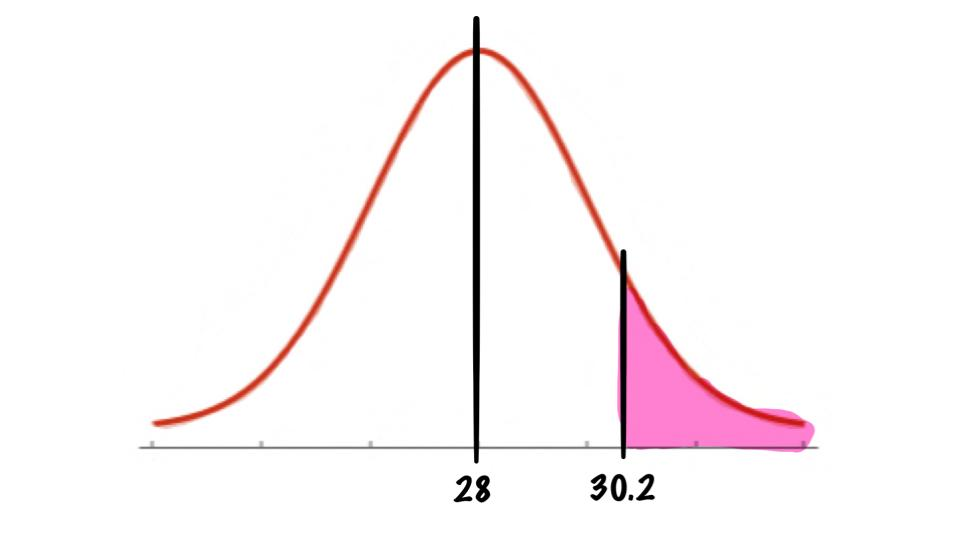

Normal Distributions
Examples
P(X > a )
Each month, an American household generates an average of 28 pounds of newspaper for garbage or recycling. Assume the variable is approximately normally distributed and the standard deviation is 2 pounds. If a household is selected at random, find the probability of its generating more than 30.2 pounds per month.

So we see that we want to find
\[P(X>30.2)\]
And to use our table we will have to convert this to a z-score:
\[z=\frac{X-\mu}{\sigma}=\frac{30.2-28}{2}=1.1\]
So we know that \(P(X>30.2)=P(Z>1.1)=1-P(Z<1.1)\) (as we have done before)
Then we look in our table we find:
\[P(Z<1.1)=0.8643\]
So we get
\[P(X>30.2)=P(Z>1.1)=1-P(Z<1.1) =1-0.8643=0.1375\]